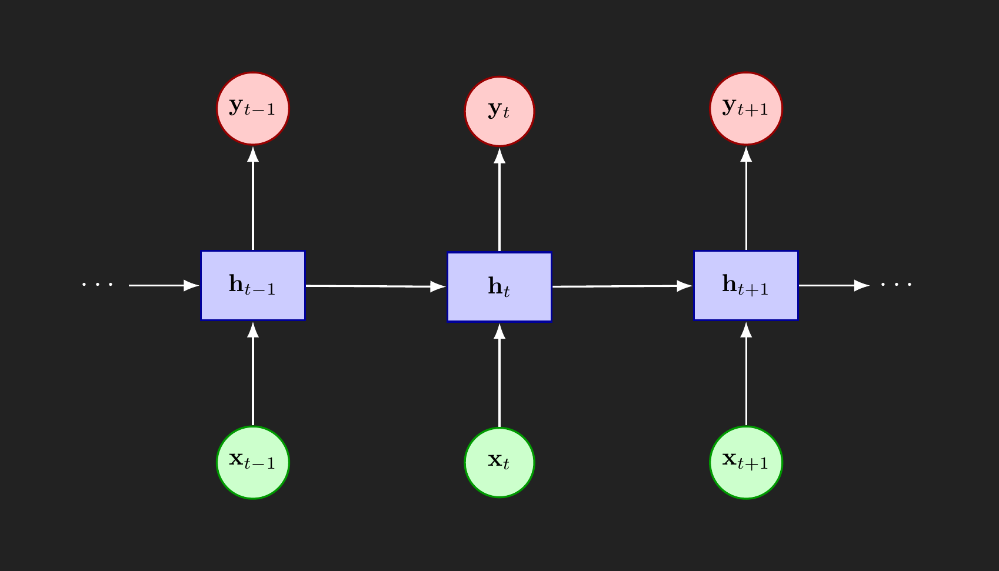
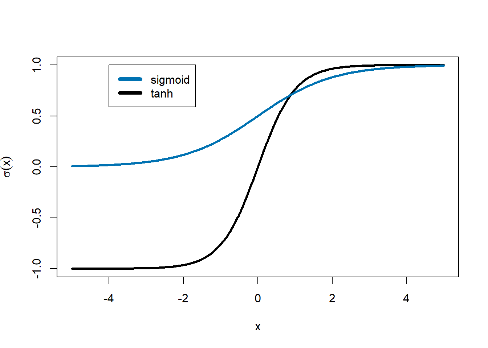
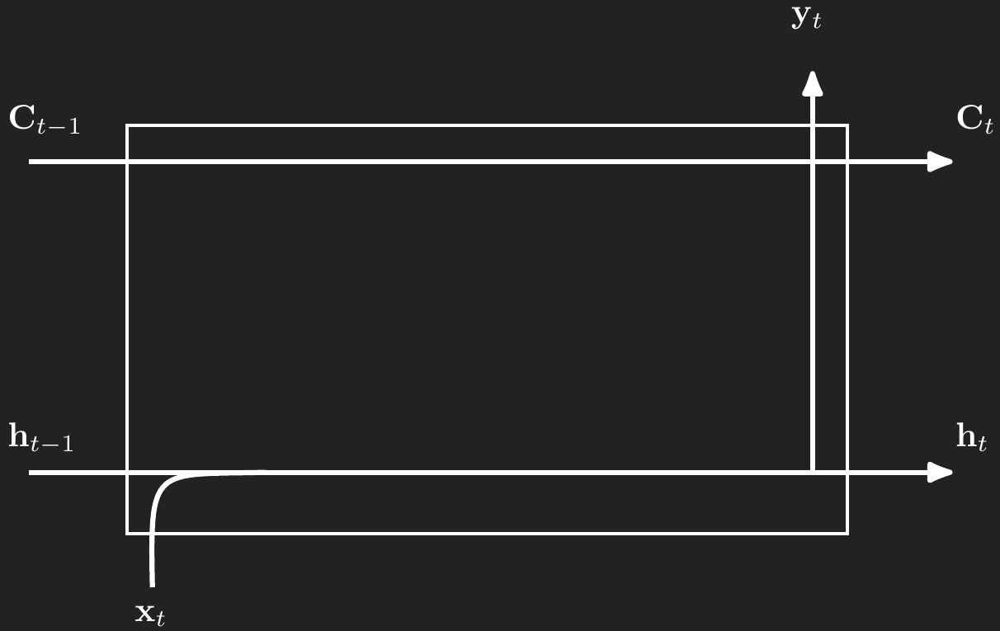
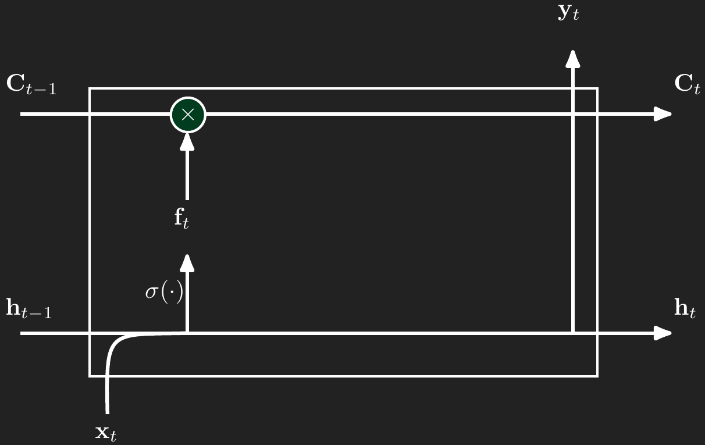
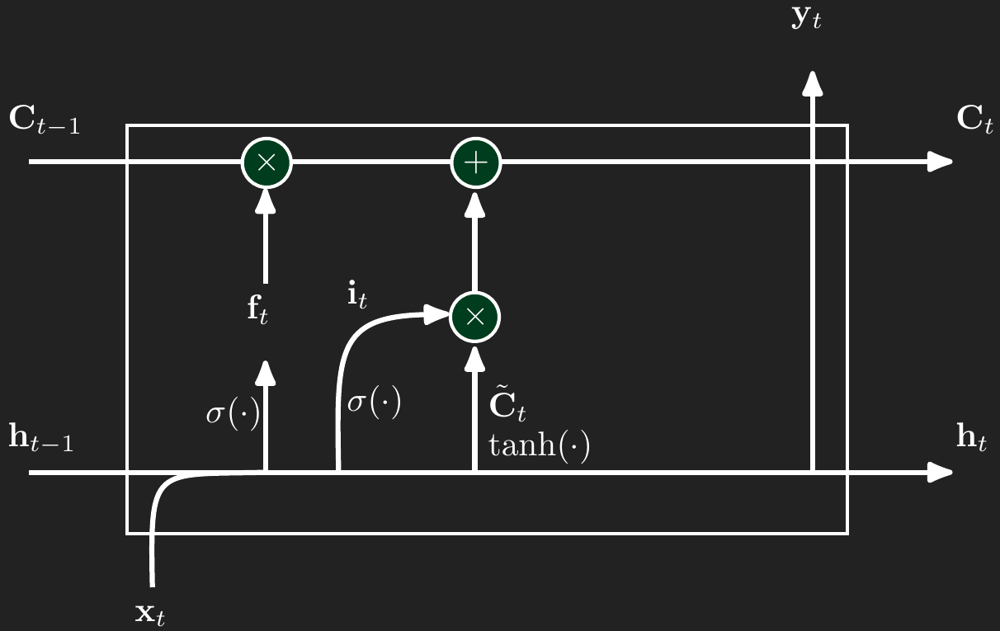
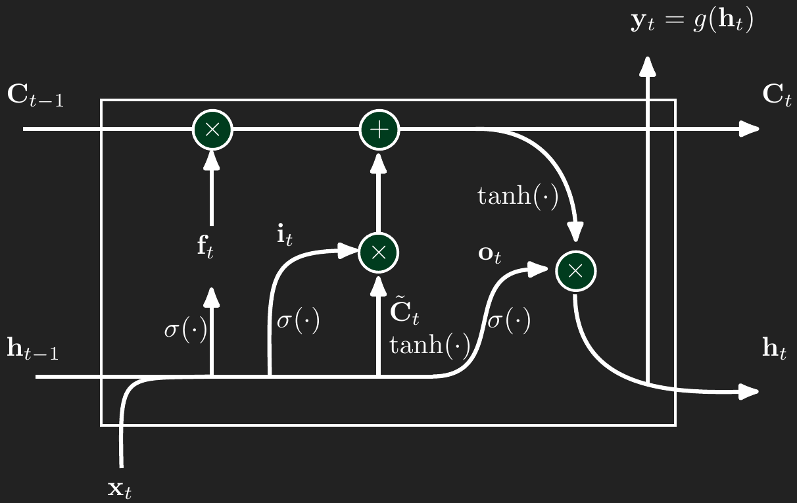

L12 Recurrent and Long Short-Term Memory Neural Networks
Recurrent neural networks (RNNs) are a class of neural networks designed to model sequential data. Unlike feedforward networks, RNNs maintain an internal state (memory) that captures information about prior elements in the sequence, making them well-suited to time series, natural language, and other sequential tasks.
1 Basic Recurrent Neural Network
First, let’s look at the basic form of a recurrent neural network. As shown in Figure 1, we observe at time \(t\) the input features \(\mathbf{x}_t\) and want to predict the output features \(\mathbf{y}_t\). Between the input and output layers is a hidden layer, \(\mathbf{h}_t\). The length of the vector \(\mathbf{h}\) does not need to match the lengths of \(\mathbf{y}\) or \(\mathbf{x}\). The hidden layer is intended to capture patterns or memories that need to persist over time, possibly modified by the current input \(\mathbf{x}_t\).
1.1 RNN activation functions
First, we need to do a quick refresh on activation functions. RNNs are going to depend on two primary activation functions: the sigmoid and hyperbolic tangent functions.
sigmoid function
transforms its argument into a value that is between 0 and 1
useful in RNNs for tagging memories that the RNN should remember (a value near 1) or can forget (a value near 0)
hyperbolic tangent
\(\tanh(x)\), often pronounced “tanch” or “tan-h”
similar shape to the sigmoid except that it stretches from -1 to 1
squashes large values into a narrow range but allows for outputs to have a positive or negative sign
In RNNs, past values may increase or decrease the chance that something happens at future time points. The hyperbolic tangent’s ability to output positive or negative values makes it a good candidate

The sigmoid function is like a smooth version of an on/off switch, while the hyperbolic tangent is like a knob that can increase or decrease a signal.
Something to pay attention to… the math notation becomes a little awkward when dealing with RNNs. We will apply functions to vectors, but intend to mean applying that function to each element of the vector. So you may see something like \(\tanh(\mathbf{x})\), where \(\mathbf{x}\) is a vector. The mathematical intention is
\[ \begin{split} \tanh(\mathbf{x}) &= \tanh(\begin{bmatrix} x_1 & x_2 & \ldots & x_n \end{bmatrix}) \\ &= \begin{bmatrix} \tanh(x_1) & \tanh(x_2) & \ldots & \tanh(x_n) \end{bmatrix}) \end{split} \] This is somewhat an abuse of mathematical notation, but try to remember these as element-wise calculations. In mathematics these are generally called “Hadamard operations” or in computer science “vectorized functions.”
With that in mind, we can turn to how the RNN blends the hidden layer memory, \(\mathbf{h}_{t-1}\), and the new input \(\mathbf{x}_t\). Traditionally, RNNs use the hyperbolic tangent function as the activation function in the hidden memory layer.
\[ \begin{split} \mathbf{h}_t &= \tanh(W_{hx} \mathbf{x}_t + W_{hh} \mathbf{h}_{t-1}) \\ &= \begin{bmatrix} \tanh\left((W_{hx} \mathbf{x}_t + W_{hh} \mathbf{h}_{t-1})_1\right) \\ \tanh\left((W_{hx} \mathbf{x}_t + W_{hh} \mathbf{h}_{t-1})_2\right) \\ \vdots \\ \tanh\left((W_{hx} \mathbf{x}_t + W_{hh} \mathbf{h}_{t-1})_n\right) \end{bmatrix} \end{split} \]
RNN’s compute the output \(y_t\) at each time point as:
\[ y_t = W_{hy} h_t \] or \[ y_t = g(W_{hy} h_t) \] where \(\sigma(\cdot)\) is some activation function.
\(W_{hx}\), \(W_{hh}\), \(W_{hy}\) are weight matrices that we would estimate using backpropation.
1.2 Challenges with RNNs
While Recurrent Neural Networks offer a powerful framework for modeling sequential data, they suffer from fundamental training challenges, most notably the vanishing gradient and exploding gradient problems. These arise during backpropagation, where gradients are repeatedly multiplied by weight matrices at each time step. If the weights are small, the gradients shrink exponentially, leading to vanishing gradients, which prevent the network from learning long-range dependencies. Conversely, if the weights are large, gradients can grow exponentially, resulting in exploding gradients, which cause unstable parameter updates and numerical overflow.
These issues make it difficult for standard RNNs to retain or learn dependencies that span many time steps, limiting their effectiveness in tasks such as language modeling or long-horizon forecasting (e.g. 30 days ago, 30 words previously).
Long Short-Term Memory (LSTM) neural networks were specifically designed to address these problems through gating mechanisms that regulate information flow.
2 Long Short-Term Memory (LSTM)
LSTMs are a version of RNNs that address the vanishing gradient problem and are able to retain long-term dependencies through a gating mechanism. They make use of clever combinations of the sigmoid and hyperbolic tangent functions to keep and discard memories and up date long-term memory with new concepts.
LSTMs look just like Figure 1, but add more complexity to the cell between \(\mathbf{x}_t\) and \(\mathbf{y}_t\). We will through the components, long-term memory, forget gates, input gates, and output gates.
2.1 Long-term memory
Throughout the LSTM model there is a kind of long-term memory, denoted \(\mathbf{C}_t\), that captures important, durable concepts. For example, if we were modeling text and a sentence begins with “Greg went…”, then the long-term memory needs to store the gender of the subject of the sentence so that the rest of the sentence conforms to traditional English grammar for pronouns. The gender concept needs to stay in long term memory until there’s some kind of change, like the introduction of a new subject.
Like the standard RNN, the cell for timepoint \(t\) has an input, \(\mathbf{x}_t\), a hidden “short-term” memory, \(\mathbf{h}_t\), and an output, \(\mathbf{y}_t\). In addition to those standard features, LSTMs add a long-term memory component, \(\mathbf{C}_t\). All of these components are vectors. In deep learning applications \(\mathbf{C}_t\) can be a vector of dimension 1,024 or more. In simpler applications or for time series forecasting, \(\mathbf{C}_t\) can be a smaller vector with dimension like 64 or 128. The dimension of \(\mathbf{C}_t\) does need to match the dimension of \(\mathbf{h}_t\).

The remaining cell components work to modify the short term memory in \(\mathbf{h}\) and the long-term memory in \(\mathbf{C}\) and produce accurate outputs in \(\mathbf{y}\). Those components are three gates: forget, input, and output. We will walk through each of these gates separately.
2.2 Forget gate
The forget gate take a linear combination of the values in \(\mathbf{x}_t\) and \(\mathbf{h}_{t-1}\), passes them through the sigmoid function, and then multiples the result elementwise with the \(\mathbf{C}_{t-1}\). Recall the sigmoid function’s shape from Figure 2. If there’s a concept that the long-term memory needs to forget, then argument to the sigmoid fucntion will be a large negative number and push the sigmoid function toward 0. Then when we multiple \(\mathbf{f}_t\) and \(\mathbf{C}_{t-1}\) elementwise (the \(\odot\) symbolizes multiplying element by element) \(\mathbf{f}_t\) will zero out the concept that needed to be forgotten. In the same way, the forget gate and keep components in memory by passing a large positive value through the sigmoid so that \(\mathbf{f}_t\) is close to 1 and keeps the long-term memory relatively unchanged in the elementwise multiplication.
\[ \begin{aligned} \mathbf{f}_t(\mathbf{x}_t,\mathbf{h}_{t-1}) &= \sigma\left(\mathbf{W}_{xf}\mathbf{x}_t + \mathbf{W}_{hf}\mathbf{h}_{t-1}\right) \\ \mathbf{C}_t &= \mathbf{f}_t \odot \mathbf{C}_{t-1} + \text{more to come here...} \end{aligned} \]

2.3 Input gate gate
The input gate handles the process of forming new long-term memories.
Like the forget gate, the input gate also takes a linear combination of the values in \(\mathbf{x}_t\) and \(\mathbf{h}_{t-1}\), passes them through the sigmoid function, and uses the result to determine how much of the candidate cell state \(\tilde{\mathbf{C}}_t\) should be written into long-term memory. The candidate \(\tilde{\mathbf{C}}_t\) is computed separately by passing a linear combination of \(\mathbf{x}_t\) and \(\mathbf{h}_{t-1}\) through the hyperbolic tangent activation function. Just like in the forget gate, the input gate’s sigmoid output \(\mathbf{i}_t\) ranges between 0 and 1, controlling the degree of update for each element. If a new concept should be added to long-term memory, the linear input to the sigmoid will be strongly positive, pushing \(\mathbf{i}_t\) close to 1. In contrast, if no update is needed in that dimension, the sigmoid output will be near 0, and the corresponding element in \(\tilde{\mathbf{C}}_t\) will be ignored during the elementwise multiplication with \(\mathbf{i}_t\). The product \(\mathbf{i}_t \odot \tilde{\mathbf{C}}_t\) is then added into \(\mathbf{C}_t\), forming the additive update to long-term memory.
\[ \begin{aligned} \mathbf{i}_t(\mathbf{x}_t,\mathbf{h}_{t-1}) &= \sigma\left(\mathbf{W}_{xi}\mathbf{x}_t + \mathbf{W}_{hi}\mathbf{h}_{t-1}\right) \\ \tilde{\mathbf{C}}_t &= \tanh\left(\mathbf{W}_{xc}\mathbf{x}_t + \mathbf{W}_{hc}\mathbf{h}_{t-1}\right) \\ \mathbf{C}_t &= \mathbf{f}_t \odot \mathbf{C}_{t-1} + \mathbf{i}_t \odot \tilde{\mathbf{C}}_t \end{aligned} \]

2.4 Output gate
The output gate determines how much of the current long-term memory \(\mathbf{C}_t\) should be exposed to the rest of the network at time \(t\). Like the other gates, it takes a linear combination of \(\mathbf{x}_t\) and \(\mathbf{h}_{t-1}\), passes the result through a sigmoid function, and uses that to control the final output. But instead of applying this gate directly to \(\mathbf{C}_t\), the cell state is first passed through the hyperbolic tangent to squash its values between \(-1\) and \(1\), producing a bounded signal. Then the gate value \(\mathbf{o}_t\) is multiplied elementwise with the transformed memory, yielding the hidden state \(\mathbf{h}_t\). This means the output gate decides how much of each component in the memory vector is allowed to influence the next time step. If the sigmoid pushes a value in \(\mathbf{o}_t\) close to 0, the corresponding element in \(\mathbf{C}_t\) will be suppressed. If it is close to 1, the full strength of that memory component will be stored in \(\mathbf{h}_t\).
\[ \begin{aligned} \mathbf{o}_t(\mathbf{x}_t,\mathbf{h}_{t-1}) &= \sigma\left(\mathbf{W}_{xo}\mathbf{x}_t + \mathbf{W}_{ho}\mathbf{h}_{t-1}\right) \\ \mathbf{h}_t &= \mathbf{o}_t \odot \tanh\left(\mathbf{C}_t\right) \\ \mathbf{y}_t &= g(\mathbf{h}_t) \end{aligned} \]

Lastly, we need to make a prediction for time \(t\). The prediction is simply a transformation of \(\mathbf{h}_t\).
3 Building an SLM (small language model)
While large language models (LLMs) have revolutionized our relationships with computers, they require a massive amount of data and compute power. Here we are going to build a small language model, the kind that your computer can learn in a couple of hours with no special computing hardware. I am warning you in advance that you should not expect much from this exercise. It will not be able to write an essay, compose a limerick, or debug your code. It will produce real words and add punctuation and use some correct grammar in very short bursts. And it will produce complete gibberish too. However, I think it will give you insight into how a LLM could work. You will be able to conceive how the modern LLMs (those emerging after 2023) are possible with more data and a more complex neural network.
Here’s how we will proceed. I will have R read in a lengthy book appropriate for this class, Fyodor Dostoyevsky’s Crime and Punishment. I will chop it up into blocks of 50 characters. I will train on those 50-character blocks an LSTM neural network to predict the very next character. So with any 50-character block, the neural network will give a probability distribution over the next character.
We can use the fitted neural network to “write” by seeding it with a new block of text and have it draw from the next-character distribution. Let’s say I start off with the 50-character sequence
“On an exceptionally hot evening early in July a yo”
The next character could be a “d” (if the word were to become “yodel”) or a “u” (if the word were to become “youth” or “young” or “your”). Let’s say that it picked a “u”. Our new 50-character block would become
“n an exceptionally hot evening early in July a you”
Note that I have cut off the first character (the “O”) and appended the newly drawn character “u” at the end. We can repeat the process of drawing the next character and sliding the 50-character window forward. If we had an amazingly good LSTM, then it would write like Dostoyevsky himself and write the famous first line
“On an exceptionally hot evening early in July a young man came out of the garret in which he lodged in S. Place and walked slowly, as though in hesitation, towards K. bridge.”
As I warned, our small language model will be more likely to produce something like
“on an exceptionally hot evening early in July a your mount of a forget of a street and laughing at him and the street.”
So let’s get started.
3.1 Preparing the text
As usual, we will start up the necessary packages.
library(dplyr)
library(purrr)
library(keras3)Now let’s have R quickly read in the 140,000 words that make up Crime and Punishment from the Gutenberg.org website. I will collapse the entire text into a single long character string and convert all characters to lowercase. In several places there are multiple space characters in a row. I will use gsub() to turn any such set of spaces into a single space.
# Crime & Punishment
url <- "https://www.gutenberg.org/cache/epub/2554/pg2554.txt"
text <- readLines(url, warn = FALSE, encoding = "UTF-8") |>
paste(collapse = " ") |>
tolower() |>
gsub(" +", " ", x=_)We end up with a single text string with 1,149,888 characters.
# this is one very long string with all of the text
length(text)[1] 1nchar(text)[1] 1149888Gutenberg.org includes some headers and footers and there is a long preface too. Let’s strip all that out so we just have the text of the book itself.
# strip Project-Gutenberg header/footer
start <- gregexpr("part i", text)[[1]][2]
end <- regexpr("\\*\\*\\* end of the project gutenberg", text)
text <- substring(text, start, end)We can have a look at the first couple lines of the book.
First 1,000 characters
substring(text, 1, 1000)[1] “part i chapter i on an exceptionally hot evening early in july a young man came out of the garret in which he lodged in s. place and walked slowly, as though in hesitation, towards k. bridge. he had successfully avoided meeting his landlady on the staircase. his garret was under the roof of a high, five-storied house and was more like a cupboard than a room. the landlady who provided him with garret, dinners, and attendance, lived on the floor below, and every time he went out he was obliged to pass her kitchen, the door of which invariably stood open. and each time he passed, the young man had a sick, frightened feeling, which made him scowl and feel ashamed. he was hopelessly in debt to his landlady, and was afraid of meeting her. this was not because he was cowardly and abject, quite the contrary; but for some time past he had been in an overstrained irritable condition, verging on hypochondria. he had become so completely absorbed in himself, and isolated from his fellows that he d”
It is probably good to check what characters are in the book and how frequently they appear.
# here are all the characters
strsplit(text, "") |> table() |> sort() |> rev()
e t a o n i h s r d
202708 102758 79018 72797 70581 61860 61287 55265 52476 47089 38511
l u m y w c g f , . p
35272 27166 22013 20884 20634 18196 17927 16722 16003 15791 13485
b v k ’ “ ” ! ? - x z
11952 10948 9589 4034 3971 3922 2363 2277 2257 1297 1086
; q j _ ‘ : ï ) ( * é
1046 775 743 506 275 233 222 156 156 32 17
] [ ô æ ê ä 4 1 à 8 7
6 6 4 4 3 3 3 3 2 2 2
ü ö î è ç 9 6 5 3
1 1 1 1 1 1 1 1 1 As previously mentioned, I will turn the entire book into blocks of 50 characters. Rather than using every single 50-character block, I am going to slide my 50-character window by three characters.
# Choose sequence length and step between sequences
maxlen <- 50 # characters fed into the model
step <- 3 # slide window by 3 chars to augment the dataWe are going to need to turn every character into a number. Keras is expecting numeric data after all. Let’s have chars store the set of 63 unique characters that appear in the book. I will also make two helper objects that will allow us to turn the letters into numbers and then translate any output numbers back into letters.
# translate characters -> integers (and integers back to characters)
chars <- strsplit(text,"") |> unlist() |> unique() |> sort()
# lookup for turning characters into numbers
char2index <- set_names(seq_along(chars) - 1, chars)
char2index - ! ( ) * , . : ; ? [ ] _ ‘ ’ “ ” 1 3 4 5 6 7 8 9
0 1 2 3 4 5 6 7 8 9 10 11 12 13 14 15 16 17 18 19 20 21 22 23 24 25
a à ä æ b c ç d e é è ê f g h i î ï j k l m n o ô ö
26 27 28 29 30 31 32 33 34 35 36 37 38 39 40 41 42 43 44 45 46 47 48 49 50 51
p q r s t u ü v w x y z
52 53 54 55 56 57 58 59 60 61 62 63 # lookup for turning numbers back into characters
index2char <- set_names(chars, seq_along(chars) - 1)
index2char 0 1 2 3 4 5 6 7 8 9 10 11 12 13 14 15 16 17 18 19
"-" " " "!" "(" ")" "*" "," "." ":" ";" "?" "[" "]" "_" "‘" "’" "“" "”" "1" "3"
20 21 22 23 24 25 26 27 28 29 30 31 32 33 34 35 36 37 38 39
"4" "5" "6" "7" "8" "9" "a" "à" "ä" "æ" "b" "c" "ç" "d" "e" "é" "è" "ê" "f" "g"
40 41 42 43 44 45 46 47 48 49 50 51 52 53 54 55 56 57 58 59
"h" "i" "î" "ï" "j" "k" "l" "m" "n" "o" "ô" "ö" "p" "q" "r" "s" "t" "u" "ü" "v"
60 61 62 63
"w" "x" "y" "z" It is time to create out data matrix \(\mathbf{X}\). I’ll convert all of the characters in the book into their numeric equivalent. Here you can see the first 100 characters in the book and how they get turned into numbers.
# convert all characters to numbers 0-63
ids <- char2index[strsplit(text, "")[[1]]]
ids[1:100] p a r t i c h a p t e r i o n a n e x c
52 26 54 56 1 41 1 31 40 26 52 56 34 54 1 41 1 49 48 1 26 48 1 34 61 31
e p t i o n a l l y h o t e v e n i n g e a r
34 52 56 41 49 48 26 46 46 62 1 40 49 56 1 34 59 34 48 41 48 39 1 34 26 54
l y i n j u l y a y o u n g m a n c a m
46 62 1 41 48 1 44 57 46 62 1 26 1 62 49 57 48 39 1 47 26 48 1 31 26 47
e o u t o f t h e g a r r e t i n
34 1 49 57 56 1 49 38 1 56 40 34 1 39 26 54 54 34 56 1 41 48 Next we will chop this sequence of numbers into blocks of length maxlen (50). starts contains the starting index of each block. Remember that we are going to slide the 50-character window by step (3) each time. That is why you see the starting index skips by 3 (1, 4, 7, …).
# get the starting character location for each block
starts <- seq(1, length(ids)-maxlen, by=step)
starts[1:100] [1] 1 4 7 10 13 16 19 22 25 28 31 34 37 40 43 46 49 52
[19] 55 58 61 64 67 70 73 76 79 82 85 88 91 94 97 100 103 106
[37] 109 112 115 118 121 124 127 130 133 136 139 142 145 148 151 154 157 160
[55] 163 166 169 172 175 178 181 184 187 190 193 196 199 202 205 208 211 214
[73] 217 220 223 226 229 232 235 238 241 244 247 250 253 256 259 262 265 268
[91] 271 274 277 280 283 286 289 292 295 298Next we will take each of the starting indices from starts and add the sequence 0:49 to them so that each row of matIDs will contain the indices for the 50-character block of text we want to extract. Note that each row shows a sequence of 50 indices in order. Each subsequent row is the same as the previous one but shifted by 3.
# take all "starts" and adds 0:(maxlen-1) to them
matIDs <- outer(starts, 0:(maxlen - 1), `+`)
head(matIDs, 3) [,1] [,2] [,3] [,4] [,5] [,6] [,7] [,8] [,9] [,10] [,11] [,12] [,13] [,14]
[1,] 1 2 3 4 5 6 7 8 9 10 11 12 13 14
[2,] 4 5 6 7 8 9 10 11 12 13 14 15 16 17
[3,] 7 8 9 10 11 12 13 14 15 16 17 18 19 20
[,15] [,16] [,17] [,18] [,19] [,20] [,21] [,22] [,23] [,24] [,25] [,26]
[1,] 15 16 17 18 19 20 21 22 23 24 25 26
[2,] 18 19 20 21 22 23 24 25 26 27 28 29
[3,] 21 22 23 24 25 26 27 28 29 30 31 32
[,27] [,28] [,29] [,30] [,31] [,32] [,33] [,34] [,35] [,36] [,37] [,38]
[1,] 27 28 29 30 31 32 33 34 35 36 37 38
[2,] 30 31 32 33 34 35 36 37 38 39 40 41
[3,] 33 34 35 36 37 38 39 40 41 42 43 44
[,39] [,40] [,41] [,42] [,43] [,44] [,45] [,46] [,47] [,48] [,49] [,50]
[1,] 39 40 41 42 43 44 45 46 47 48 49 50
[2,] 42 43 44 45 46 47 48 49 50 51 52 53
[3,] 45 46 47 48 49 50 51 52 53 54 55 56Lastly, we will store in X the numeric codes for the associated characters indexed by matIDs.
# recode blocks into numbers
X <- matrix(ids[matIDs], ncol = maxlen)
head(X, 3) [,1] [,2] [,3] [,4] [,5] [,6] [,7] [,8] [,9] [,10] [,11] [,12] [,13] [,14]
[1,] 52 26 54 56 1 41 1 31 40 26 52 56 34 54
[2,] 56 1 41 1 31 40 26 52 56 34 54 1 41 1
[3,] 1 31 40 26 52 56 34 54 1 41 1 49 48 1
[,15] [,16] [,17] [,18] [,19] [,20] [,21] [,22] [,23] [,24] [,25] [,26]
[1,] 1 41 1 49 48 1 26 48 1 34 61 31
[2,] 49 48 1 26 48 1 34 61 31 34 52 56
[3,] 26 48 1 34 61 31 34 52 56 41 49 48
[,27] [,28] [,29] [,30] [,31] [,32] [,33] [,34] [,35] [,36] [,37] [,38]
[1,] 34 52 56 41 49 48 26 46 46 62 1 40
[2,] 41 49 48 26 46 46 62 1 40 49 56 1
[3,] 26 46 46 62 1 40 49 56 1 34 59 34
[,39] [,40] [,41] [,42] [,43] [,44] [,45] [,46] [,47] [,48] [,49] [,50]
[1,] 49 56 1 34 59 34 48 41 48 39 1 34
[2,] 34 59 34 48 41 48 39 1 34 26 54 46
[3,] 48 41 48 39 1 34 26 54 46 62 1 41To double check our work, let’s check that the first values in ids matches the first row in X.
# note first line numbers match first line of text
ids[1:36] p a r t i c h a p t e r i o n a n e x c
52 26 54 56 1 41 1 31 40 26 52 56 34 54 1 41 1 49 48 1 26 48 1 34 61 31
e p t i o n a l l y
34 52 56 41 49 48 26 46 46 62 Time to extract our outcome value, the character that comes after the 50-character block stored in X. That’s going to be character in position 51 for our first block, character 54 for our second block (remember shifting by 3 each time).
# create y (next character)
y <- ids[starts + maxlen]Let’s double check our work here. The first line is “On an exceptionally hot evening early in July”. Let’s translate the first row of the numeric X back into characters using index2char. The first 50 characters ends just before completing the work “early”. Correctly, y[1] equals the letter “a” to continue the spelling of “early”. So ideally, we will train our neural network that when it sees text like “…on an exceptionally hot evening e” that it will be likely to predict the letter “a” next, at least that is what Dostoyevsky would do.
# first line: "on an e..."
index2char[as.character(X[1,])] 52 26 54 56 1 41 1 31 40 26 52 56 34 54 1 41 1 49 48 1
"p" "a" "r" "t" " " "i" " " "c" "h" "a" "p" "t" "e" "r" " " "i" " " "o" "n" " "
26 48 1 34 61 31 34 52 56 41 49 48 26 46 46 62 1 40 49 56
"a" "n" " " "e" "x" "c" "e" "p" "t" "i" "o" "n" "a" "l" "l" "y" " " "h" "o" "t"
1 34 59 34 48 41 48 39 1 34
" " "e" "v" "e" "n" "i" "n" "g" " " "e" # next character is
y[1] a
26 # "on an exceptionally hot evening early in July3.2 LSTM model of text
To speed things along, I have stored the results of the LSTM models in the data folder. Unless you want to tinker with the structure and parameters, you can instantly load the LSTM model stored in the .h5 file. The code below shows all the steps, including how to save the neural network parameters.
If you already have a neural network in memory, then it is best to clear it all out before proceeding.
clear_session()
gc()Now we need to explain to Keras what kind of neural network we want to use on these data. I will walk us through the three layers of this network.
layer_embedding()is a lookup table that turns the integer IDs into a short, numeric vector of length 64. Internally Keras creates a \(65 \times 64\) (number of unique characters in the book \(\times\) output dimension) weight matrix. When the model sees, say, the integer 42, it simply grabs row 42 of that matrix and passes the 64-number output vector on to the LSTM. No arithmetic is done on the integer IDs themselves. They are treated as pure categorical labels.layer_lstm()sets up the LSTM. We are asking Keras to set up 128 LSTM cells. Each cell keeps its own long-term, \(C_t\), and short-term memory, \(h_t\). During training these 128 cells learn to capture the dependencies between the characters that flow through the sequence.That length 128 vector from the LSTM is then fed into the dense layer, whose softmax turns it into a probability distribution over possible characters.
# fitting this model takes about 2.5 hours on a laptop
model <- keras_model_sequential() |>
layer_embedding(input_dim = length(chars) + 1, output_dim = 64) |>
layer_lstm(128, dropout=0.2) |>
layer_dense(length(chars) + 1, activation = "softmax")Here’s another version with two LSTM layers, adding to the complexity of the model. The first LSTM layer captures the character-level patterns. The second LSTM should be better at learning entire phrases.
# this version takes about 4.5 hours on a laptop
model <- keras_model_sequential() |>
layer_embedding(input_dim = length(chars)+1, output_dim = 64) |>
layer_lstm(256, return_sequences = TRUE,
dropout = 0.2, recurrent_dropout = 0.2) |>
layer_lstm(128, dropout = 0.2) |>
layer_dense(length(chars)+1, activation = "softmax")We will ask Keras to fit the neural network to optimize a multinomial log-likelihood (a generalization of the Bernoulli log-likelihood to more than 0/1).
model |> compile(
loss = "sparse_categorical_crossentropy",
optimizer = "rmsprop"
)Finally, estimate all the parameters. This model has 538,369 parameters. Note that ChatGPT has roughly 10 million times more parameters. This is another warning that you may be disappointed by the results from this model.
# about 4.5 hours
model |> fit(x = X,
y = y,
batch_size = 128,
epochs = 20,
validation_split = 0.1)If you save the model in a file, then you can always load it up later.
save_model(model, "LSTM_CrimeAndPunishment.keras")3.3 Generate text
Have we encapsulated Dostoevsky in our LSTM? Let’s find out.
This first function we will use to draw the next character. nextSample() takes in a vector of predicted probabilities (of length 63) and samples one with probability equal to preds. The value of temperature can make the resulting text more “creative” (temperature > 1) or more “conservative” (temperature < 1).
nextSample <- function(preds, temperature = 1)
{
# sharpen / soften distribution
preds <- log(preds + 1e-8) / temperature
# sum to 1
probs <- exp(preds) / sum(exp(preds))
# return 0-based ID
sample.int(length(probs), size=1, prob=probs) - 1
}generateText() will take in an initial prompt (seed) and begin “writing” based on what the LSTM predicts will be consistent with Dostoevsky’s style… we’ll see about that. It just draws the next character, drops the first character in the seed, appends the newly drawn character, and repeats.
generateText <- function(seed,
nChars2Generate = 400,
temperature = 0.7)
{
# remember our model uses lowercase only
seed <- tolower(seed)
## ensure seed is at least maxlen; if longer, keep the tail
seedIDs <- char2index[strsplit(seed, "")[[1]]] |>
tail(maxlen)
generated <- seed
for(i in 1:nChars2Generate)
{
# format for our model
xPred <- matrix(seedIDs, nrow = 1) # 1 x maxlen matrix
preds <- model |>
predict(xPred, verbose = 0)
nextID <- nextSample(preds[1, ], temperature)
nextChar <- index2char[[as.character(nextID)]]
generated <- paste0(generated, nextChar)
seedIDs <- c(seedIDs[-1], nextID) # slide window
}
generated
}What if we start with a famous like from Dickens’ Tale of Two Cities.
SLM trying to complete Dickens
cat(generateText(
seed = "It was the best of times, it was the worst of times, it was the age of wisdom, ",
nChars2Generate = 300,
temperature = 1
))it was the best of times, it was the worst of times, it was the age of wisdom, on the bread, like a suf time and was view that had been understand everyone sibe his table, too me. “verys, from you?” “when it is heart! i nept so mr. said, and you’re happened not? do you see it? peoplely yet again,” said raskolnikov, addressing at him heavy, sick on the whila and there was somet
Yikes! Let’s ease up on the creativity.
SLM trying to complete Dickens, less creative
cat(generateText(
seed = "It was the best of times, it was the worst of times, it was the age of wisdom, ",
nChars2Generate = 300,
temperature = 0.5
))it was the best of times, it was the worst of times, it was the age of wisdom, but she was so to the stairs and the company people with him and that she was something to the sort of a great deal of a conscious of his contrassions of his hands, and the disturbbed and so the same steps of a town and down of dreams and they are so the stairs, they were to do and a turned of the w
I think Dicken’s said it better: “it was the epoch of belief, it was the epoch of incredulity…”
Can this help me improve my LSTM?
A plea that ChatGPT would understand
cat(generateText(
seed = "What advice would you give me for improving my LSTM model? ",
nChars2Generate = 300,
temperature = 0.4
))what advice would you give me for improving my lstm model? i was the police of the strange of the same things. the door. “what is it! you are done anything. i am not to him to distoneting the street and should not see that he was so to see that if it was a man of his hands of the sofa, so it was to perhaps he had been as it was a drunkard to the company to
4 Conclusion
Recurrent Neural Networks and their variants such as LSTMs provide a powerful framework for modeling sequential data. While RNNs are simpler and easier to understand, LSTMs are typically more effective for learning long-term dependencies thanks to their gated architecture.
If only we had 10 million laptops that we could all chain together and had rapid access to the universe of books, articles, github sites, then we might have something useful.
In spite of the gibberish, there is evidence that such models could potentially work. Even though we are only predicting one character at a time, we get many correct words. We get prepositional phrases. We get subject and verb compatibility. Frankly, I was rather surprised that with relatively few parameters the LSTM learns a few important parts of the English language. No doubt this is insufficient for any practical use, but I hope you see the direction this leads. We now know with more complex neural network designs and larger datasets, LLMs can be incredibly useful and powerful. The basics covered here give you the foundation for the next steps. Transformers have been the key for LLMs to become so effective. Surely, there are more architectures yet undiscovered that will make deep learning even more powerful.